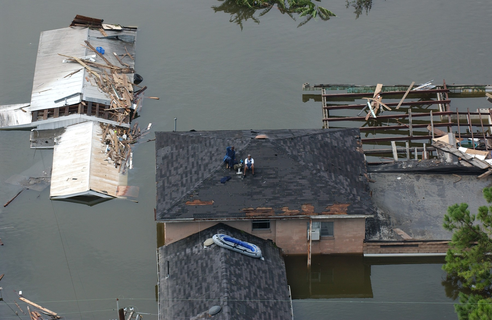
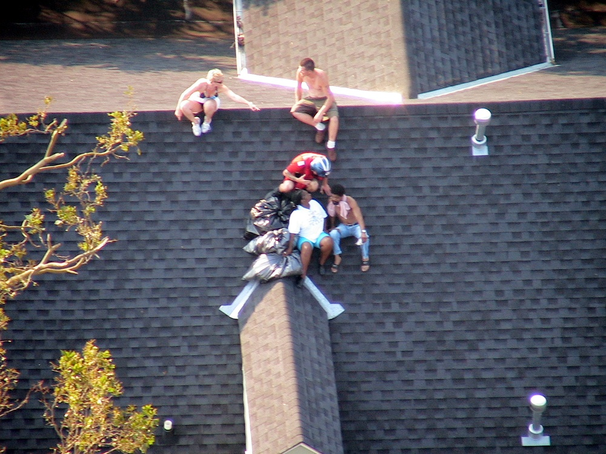

The river bends around central New Orleans. Its water is distinct from the lake and canal.
Blood Dazzler
New Orleans: river, lake, and neighborhoods
Choose a view, or select a place below. Select “Move map” to drag or pinch. Use the + and − controls to zoom.
The place descriptions below remain available if the map cannot load.
French QuarterLower Ninth Ward statistical areaHoly Cross
The large body of water north of central New Orleans.
Also called the Inner Harbor Navigation Canal. It connects the lake and river and lies west of the Lower Ninth Ward.
A historic neighborhood beside the river. Use it to orient the city; the opening poems do not give the tourists a street address.
The shaded area follows the city’s statistical neighborhood boundary. The Ninth Ward is larger. The woman “in the Ninth” on p. 22 has no given address.
A context landmark west of the French Quarter. The poem “Superdome” appears later in the book, on p. 40.
Modern geography for orientation. These are neighborhood outlines, not 2005 flood boundaries. Water labels identify broad features; they do not identify levee breaches or a character’s home.
Map sources
Basemap: OpenStreetMap contributors. Neighborhood geometry: City of New Orleans, 2020 Census neighborhood statistical areas, retrieved October 4, 2026. Geographic checks: National Park Service area map, USACE Industrial Canal description, and official Superdome address. Coordinates use longitude/latitude degrees (WGS 84); the web basemap uses Web Mercator. North is up. Report a basemap issue.
People waiting on roofs



Read “Up on the Roof,” p. 23. Describe what each photograph shows, then identify what the poem supplies that the photograph cannot establish. The photographs do not identify the poem’s unnamed survivor.
Helicopter rescue in New Orleans
Visual description of the footage
The camera looks down from a helicopter over flooded streets and rooftops. People wait on a roof; a crew member and hoist line appear in the foreground. In the final part, a rescue swimmer and survivor rise toward the helicopter, and the crew brings the survivor through the open door.
These descriptions identify visible actions; they do not transcribe dialogue.
Word cloud
Word clouds by section and whole book
Circle area shows frequency. Numbers show counts.
Scroll sideways to read every circle.
pp. vii–24 · 50 most frequent words, excluding common words such as the, a, and an.
Read all word counts
- rain15
- go11
- little11
- water10
- know8
- one8
- back7
- day7
- luther7
- name7
- new7
- purple7
- b6
- behind6
- bodies6
- dog6
- eye6
- hard6
- house6
- see6
- sky6
- sound6
- away5
- first5
- leave5
- still5
- time5
- tree5
- whole5
- breath4
- chaos4
- done4
- garden4
- get4
- god4
- got4
- hair4
- hold4
- home4
- last4
- light4
- maybe4
- mouth4
- say4
- small4
- something4
- wait4
- way4
- weather4
- woman4
Counting method
3,117 words in the poem bodies on pp. vii–24. Titles, headnotes, epigraphs, timestamps, and page numbers are excluded. Capitalization is ignored; contractions and hyphenated words remain intact; straight and curly apostrophes are treated alike. These are selected exact-word counts, not totals for word families. Common function words and their contractions are removed using the stop_words list in this file. The 50 most frequent remaining words are shown; ties are ordered alphabetically. Word forms are not combined. Circle area is proportional to count; position and color do not add meaning.
Explicit characters
Explicit characters are named or directly described. They can be unnamed people, groups, animals, religious figures, or personified places and weather.
New Orleans and Katrina are different female figures. Keep the city’s voice separate from the storm’s voice, and keep the unnamed residents separate from one another.
| Character | Pages | What the text establishes |
|---|---|---|
| New Orleans | vii–viii, 6 | A personified city addressed as a woman. Visitors also appear in the city poems. |
| Katrina | 1–5, 11–12, 18–20 | The hurricane becomes a speaking woman with a mouth, eye, appetite, and desire for recognition. |
| Residents who hear, question, or resist the warning | 7–8, 14 | Different unnamed voices describe attachment to home, barriers to leaving, and confidence from surviving an earlier storm. |
| The man on television | 7, 10 | An evacuation warning reaches people through his voice. |
| The affluent evacuee and husband | 13 | An unnamed speaker narrates departure in a Lincoln toward another home; the speaker’s husband prepares the house. |
| Luther B, m’dear, and the departing household | 10, 15, 21 | Luther B is the dog left tied to a tree. M’dear is remembered through her care, speech, and food. |
| B-boys, children, and mothers | 16 | Children first treat rain as familiar; mothers later bring their lives onto rooftops. |
| The church community and its religious references | 17; also 7, 15, 18, 21, 23 | A choir, elders, and a preacher appear on p. 17. God, Jesus, and the Lord are invoked across the poems. |
| President George Bush and the woman in the Ninth | 22 | The president plays guitar while a woman voices abandonment. The headnote also names country singer Mark Willis (as printed). |
| People on the roof and helicopter crews | 23 | People signal, call for help, hold babies, and face rescue decisions. Aircraft noise competes with their words. |
| Tourists and unnamed sexual partners | vii–viii, 6, 9 | Visitors seek pleasure in the city. The love-spell poem gives desire a physical, potentially violent force. |
| Mutts, priestesses, and tree trunks | 19–20 | They hear the first sound. Smith extends perception beyond the usual human witnesses. |
Implicit characters
These are people or groups inferred from the poems. The identifications below are interpretations.
| Implied figure | Pages | Evidence for the inference |
|---|---|---|
| Unseen camera workers and viewers | 23; compare 22 | Cameras and judgments imply people who frame, circulate, and interpret the survivors’ images. |
| The people responsible for evacuation and protective infrastructure | 7, 13, 18 | A warning and cracking levees imply decisions about movement, protection, and public responsibility. |
| Racially prejudiced viewers | 23 | The focus on hair, jewelry, bodies, and speech suggests viewers who judge the survivors through stereotypes. This is an interpretation of the camera’s attention. |
| Ancestors subjected to deadly passage over water | 18 | Water’s earlier passage toward death suggests historical memory, possibly the Middle Passage. No ancestor or historical event is named. |
Who speaks in each poem?
Page numbers are printed book pages. A narrator describing someone’s experience is different from that person speaking directly.
| Pages | Poem | Voice or perspective |
|---|---|---|
| vii–viii | Prologue: And Then She Owns You | A voice addressing a visitor; New Orleans is “she”. |
| 1 | 5 p.m., Tuesday, August 23, 2005 | Katrina: first-person storm voice. |
| 3 | 11 a.m., Wednesday, August 24, 2005 | Katrina receives her name. |
| 4 | 5 p.m., Thursday, August 25, 2005 | Katrina describes her eye. |
| 5 | 7 p.m., Thursday, August 25, 2005 | Katrina encounters land. |
| 6 | Why New Orleans Is | A collective tourist “we”. |
| 7 | Man on the TV Say | A resident answers the television warning. |
| 8 | Only Everything I Own | A homeowner describes an inherited house. |
| 9 | Voodoo I: Love and Passion | A voice describes sexual desire. |
| 10 | Won’t Be but a Minute | A household leaves Luther B behind. |
| 11 | 8 a.m., Sunday, August 28, 2005 | Katrina speaks at full strength. |
| 13 | Inconvenient | An affluent evacuee narrates departure. |
| 14 | Company’s Coming | A survivor of an earlier hurricane speaks. |
| 15 | The Dawn of Luther B’s Best Day | A narrator follows Luther B’s perceptions. |
| 16 | Ghazal | A witness moves among children, mothers, and others. |
| 17 | 10:30 a.m., Sunday, August 28, 2005 | A narrator observes the church congregation. |
| 18 | She Sees What It Sees | A narrator describes flooding through the ward. |
| 19–20 | What Was the First Sound | A repeating voice reconstructs the first sound. |
| 21 | Luther B Rides Out the Storm | A narrator follows Luther B, remembering m’dear. |
| 22 | Gettin’ His Twang On | A narrator contrasts Bush with a woman in the Ninth. |
| 23 | Up on the Roof | A voice addresses a rooftop survivor as “you”. |
| 24 | Voodoo II: Money | A voice questions money as protection. |
Discussion
Map: place and movement
Book: pp. 7, 13, 22
- Locate the Mississippi River, Lake Pontchartrain, Industrial Canal, and Lower Ninth Ward.
- Identify two obstacles to leaving in Man on the TV Say and two resources available in Inconvenient.
- Explain one detail the map helps you understand and one detail it cannot tell you about either household.
Photographs: signals from a roof
Book: pp. 23
- Describe two visible details in one roof photograph.
- Match each detail to a word or action in Up on the Roof.
- Identify one feeling, motive, or judgment in the poem that the photograph alone cannot prove.
Video: who can hear whom
Book: pp. 23
- Describe the helicopter video’s camera position and one audible sound.
- Find the passage in Up on the Roof where aircraft noise interferes with speech.
- Explain how the poem’s you changes your position compared with the video camera’s position.
Compare: the same command
Book: pp. 7, 13
- Read the first Go in each poem aloud.
- Name the speaker, a resource, and an obstacle in each poem.
- Explain one change in the command’s meaning using a detail from each poem.